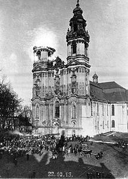

W ksi¹¿ce Romualda M. £uczyñskiego "Tropami Œl¹skiego dziedzictwa" mo¿na znaleŸæ bardzo dok³adny opis po¿aru wie¿y krzeszowskiego koœcio³a: Pocz¹tek XX wieku nie by³ dla koœcio³a najszczêœliwszy, choæ przecie¿ mog³o skoñczyæ siê znacznie gorzej. Otó¿ jedna z wie¿ koœcielnych pad³a pastw¹ p³omieni. W œrodê, 22 paŸdziernika 1913 r., tu¿ po godz. 10.00 przed po³udniem zauwa¿ono, ¿e z he³mu lewej (pó³nocnej) wie¿y koœcio³a wydobywaj¹ siê k³êby dymu.
Natychmiast zawiadomiono telefonicznie fabryczn¹ i miejsk¹ stra¿ po¿arn¹ w Kamiennej Górze, a przed godz. 11.00 syren¹ stra¿ack¹ i tr¹bkami sygna³owymi powiadomiono mieszkañców Kamiennej Góry o nieszczêœciu. Na miejsce po¿aru przyje¿d¿a³y oddzia³y stra¿aków z ca³ego powiatu, zjawi³ siê tak¿e starosta powiatowy Moritz. Wiej¹cy silny wiatr po³udniowy i po³udniowo-zachod-ni rozprzestrzenia³ ogieñ na okoliczne budynki. Zajê³y siê domy stolarza Güttlera, murarza Schuberta, kupca Ulbera i Wilhelma Paatscha. Poniewa¿ domy Schuberta i Ulbera by³y czêœciowo murowane, uda³o siê je uratowaæ, natomiast Güttler i Paatsch stracili wszystko, ich siedziby bowiem kryte by³y strzech¹. W he³mach wie¿ koœcielnych zajê³y siê suche belki, trzymaj¹ce dzwony, z tego powodu oko³o 17.00 po po³udniu spad³a do wnêtrza wie¿y chluba klasztoru, dzwon Emanuel, wa¿¹cy 80 cetnarów (oko³o 400 kg), odlany w 1731 r. przez wroc³awskiego ludwisarza Johanna Jakoba Krumpferta. Jego uroczyste poœwiêcenie nast¹pi³o 30 maja 1734 r. Topi³a siê równie¿ miedŸ, któr¹ kilka lat wczeœniej pokryto he³m, a ze szczytu wie¿y spad³a poz³acana figura anio³a. Poniewa¿ ówczesne urz¹dzenia stra¿ackie by³y zbyt ma³o wydajne, wiêc strumieñ wody nie siêga³ szczytów wie¿y. Dlatego oko³o 14.00 przyjecha³a z Sobiêcina (obecnie czêœæ Wa³brzycha) mocniejsza sikawka parowa, której silny strumieñ znacznie opanowa³ p³omienie. Ostatecznie po¿ar ugaszono po dziesiêciu godzinach od jego powstania. Nie bez znaczenia by³ tak¿e fakt, ¿e powa¿nie zmniejszy³a siê si³a wiatru. £¹cznie przy gaszeniu pracowa³o nie mniej ni¿ 35 sikawek. Niektóre ówczesne relacje prasowe zwiêksza³y tê liczbê o siedemnaœcie. Stra¿acy, pracuj¹cy pod kierunkiem powiatowego naczelnika stra¿y po¿arnej Winklera, jeszcze d³ugo zajêci byli odgruzowywaniem zgliszcz. Okaza³o siê, ¿e jeden obraz M. Willmanna, wisz¹cy w pobli¿u p³on¹cej wie¿y, zosta³ nieznacznie uszkodzony. Czêœciowemu zniszczeniu uleg³a tak¿e pó³nocna po³aæ dachu koœcio³a. Wszystkie szkody oszacowano na oko³o 80-100 tys. marek. Jak wykaza³o dochodzenie, przyczyn¹ po¿aru by³a nieostro¿noœæ blacharza, pracuj¹cego przy renowacji wie¿y. Po po¿arze wie¿ê nakryto prowizorycznym dachem, a rekonstrukcjê he³mu rozpoczêto dopiero w 1930 r. Wczeœniej napisa³em, ¿e mog³o siê skoñczyæ znacznie gorzej. W koñcu po¿ar wroc³awskiego koœcio³a œw. El¿biety zacz¹³ siê od wie¿y i teraz mamy œwi¹tyniê steryln¹, wypran¹ z patyny dziejów, bez duszy. Nawet nie chcê myœleæ o stracie tylu krzeszowskich Willmannów...

Nie jestem do koñca pewien, ale autor tego tekstu chyba mia³ na myœli obrazy Willmanna z koœcio³a którego po¿ar opisuje. Tyle tylko, ¿e w koœciele klasztornym s¹ bodaj¿e dwa obrazy Willmanna, wiêkszoœæ jest raczej w koœciele œw. Józefa.
| Skan pochodzi ze strony 149 ksi¹¿ki Romualda M. £uczyñskiego "Tropami Œl¹skiego dziedzictwa", podpis pod zdjêciem: "Po¿ar koœcio³a", natomiast Ÿród³o ilustracji opisane jest nastêpuj¹co: "Pocztówka, wydawca nieznany, rok 1913 (zbiory Archiwum Pañstwowego we Wroc³awiu. Oddzia³ w Jeleniej Górze)". | |
|  | Zdjêcie przedstawiaj¹ce akcjê gaszenia po¿aru. Trzeba przyznaæ, ¿e wozy stra¿ackie wygl¹daj¹ na bardzo ma³e w porównaniu do wielkoœci wie¿ koœcielnych. |
 |
Wycinek z niemieckiej gazety opisuj¹cy po¿ar wie¿y krzeszowskiego koœcio³a. Równie¿ i tutaj ogieñ wygl¹da na "domalowany". |
| Wycinek z niemieckiej gazety opisuj¹cy po¿ar wie¿y krzeszowskiego koœcio³a. |

{kind=link}
{kind=link}